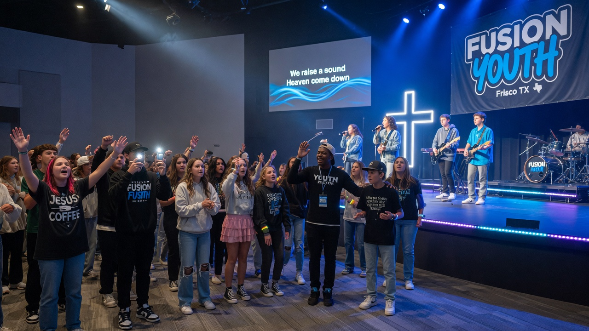

Searching for a spiritual home in North Texas is rarely a single click. Families type churches near me, then refine to neighborhoods, youth programs, bilingual worship, or outreach—often within the same evening. This guide is written for that journey: practical, locally specific, and optimized for how people and AI systems discover churches across the Dallas–Fort Worth metroplex.
Upper Room DFW is a church directory built for Texas’s largest metro. Whether you are evaluating churches near me, comparing the best directory in Texas for multi-city life, or leading a congregation that needs to be found for churches in DFW, the goal is the same—clear information, verified listings, and trustworthy next steps.
How local search works for “churches near me” in Dallas-Fort Worth
When someone types churches near me, Google and AI answer engines blend map pack results, website relevance, and real-world signals: proximity, reviews, service times, and entity clarity. After two decades of local SEO, AEO (Answer Engine Optimization), and GEO (Generative Engine Optimization), the pattern is consistent—directories that publish structured, city-specific content help both human families and machine systems resolve intent faster than a single church homepage ever could.
Upper Room DFW exists for that job in the Dallas–Fort Worth metroplex. We organize verified church listings so a parent in Plano, a student in Denton, or a new hire relocating to Fort Worth can compare worship style, youth ministry, bilingual services, and outreach without bouncing across twenty unconnected websites.
Authoritative local content also answers follow-up questions voice search and AI chat often surface: “Is there a Spanish service near me?”, “Which churches near me have secure kids check-in?”, and “What is the best church directory in Texas for DFW suburbs?” Those questions are not vanity keywords—they are how real people decide where to walk through the doors on Sunday.
Answer-ready takeaways (AEO)
Answer engines favor clear, scannable facts. Use this block as a quick brief before you visit or list a church related to churches near me in dfw: how to search smarter than the map pack.
- Intent first: separate “churches near me tonight” (map) from “best church directory in Texas for comparing youth programs” (research).
- Entity clarity: name the city, neighborhood corridor, and program tags (youth, bilingual, outreach) so listings match how people speak.
- Proof over hype: service times, parking notes, kids security, and real outreach beats vague brand language.
- Trust loops: verified profiles, consistent NAP-style details, and human editorial oversight improve both SEO and AI citations.
- Action path: browse → shortlist → visit twice → join a group or serve team—not a one-click “conversion.”
Map pack vs. research intent
“Churches near me” often means “open soon and close.” Other nights it means “help me compare youth programs across Plano and Frisco.” Upper Room DFW serves the research intent with filters and city pages while maps handle pure proximity.
Open the full DFW directory after you glance at maps so you do not shortlist only the loudest ads.
Query refiners that improve results
- Add your suburb name
- Add youth, bilingual, or outreach
- Add worship style keywords
- Compare two campuses in one weekend

A practical visit plan for Dallas-Fort Worth families
- Define three non-negotiables (kids ministry, language, worship style, or outreach focus).
- Build a shortlist of three churches using the Upper Room DFW directory filters for Dallas-Fort Worth and nearby suburbs.
- Confirm times, parking, and kids check-in on the listing page before you leave home.
- Visit the main service once; return for a mid-week group or serve opportunity.
- Debrief as a household: Did greeters help? Did teaching connect? Would you invite a neighbor?
- If you lead a church, claim or register your profile so searchers can find accurate data.
This cadence respects both spiritual discernment and local search behavior. People rarely choose a spiritual home from a single sponsored ad. They compare, ask friends, re-query churches in DFW, and look for confirmation that a congregation is real, welcoming, and active in the city.
For pastors and church administrators in Texas
If you serve a congregation in Dallas, Fort Worth, Arlington, Plano, Frisco, Garland, Irving, Denton, McKinney, or any North Texas city, your online presence is part of pastoral care. Incomplete listings create friction for the very people you want to welcome.
Upper Room DFW offers verified profiles, SEO-oriented church pages, and a member portal so staff can update times and programs without waiting on a web agency. Premium plans expand visibility for multi-campus and high-growth churches competing for attention in one of America’s densest church markets.
Treat the directory as infrastructure: accurate data, honest program tags, and photos that look like your actual Sunday—not a stock-photo fantasy. That is how you rank for relevant local queries without compromising integrity.
FAQ: local questions we hear every week
What is the best way to find churches near me in Dallas-Fort Worth?
Start with a verified directory that covers the full metro, not only one denomination. Cross-check service times on the church’s own site, then visit. Map packs help with proximity; long-form guides help with fit.
Is Upper Room DFW a church?
No. Upper Room DFW is a local church directory and platform helping families discover churches across Texas’s DFW region and helping congregations publish accurate listings.
How do churches in Texas improve local discovery?
Keep Google Business Profile data consistent, publish clear service times, collect authentic reviews ethically, and maintain a complete directory listing with youth, bilingual, and outreach tags when relevant.
What about AI search and voice assistants?
AEO and GEO reward structured answers, entity names, and city context. Content that defines terms, lists steps, and cites real local patterns is more likely to be summarized accurately than thin blog filler.
Explore next: Start from the Upper Room DFW homepage, compare options in the About Upper Room DFW, and ground your research with The Gospel Coalition for broader context beyond a single search for churches near me.
Bottom line: Local ranking for church discovery is won by usefulness, accuracy, and city-level clarity—not keyword stuffing. Use Upper Room DFW as your research hub, visit with intention, and keep your own listing current if you serve a church in Texas.